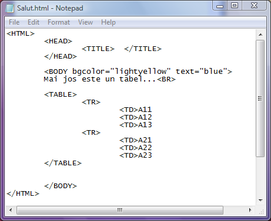
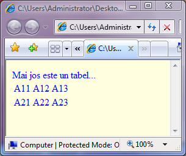

Tabele
Motivele utilizarii tabelelor in paginile web pot fi dintre cele mai diverse. Un motiv
intemeiat ar putea fi de exemplu necesitatea de a putea formata in mod diferit blocuri rectangulare
din pagina web. Un alt motiv ar putea fi divizarea paginii web in zone diferite. Evident, un
tabel poate pur si simplu sa stocheze o colectie de date.
Orice tabel este declarat cu eticheta de inceput TABLE si respectiv cu eticheta care marcheaza
sfarsitul de tabel /TABLE. Fiecare dintre randurile tabelului este declarat cu o eticheta TR
(table row - rand de tabel). Pe un rand sunt definite celulele cu eticheta TD (table data), cate
o eticheta pentru fiecare celula. In felul acesta este definit practic si numarul de coloane al
tabelului.
Iata un exemplu de tabel (codul sursa si respectiv afisarea in pagina web):


Tabelul din imaginea de mai sus este lasat cu setarile implicite nefiind specificate nici un fel
de atribute. Asadar, in mod implicit, tabelul nu are chenare...
Numarul de etichete TR defineste numarul de randuri ale tabelului iar numarul de etichete TD
dintre randuri defineste numarul de coloane al tabelului. Textul ce urmeaza unei etichete TD este
in fapt continutul celulei respectiva a tabelului...
Inapoi la Tabele...